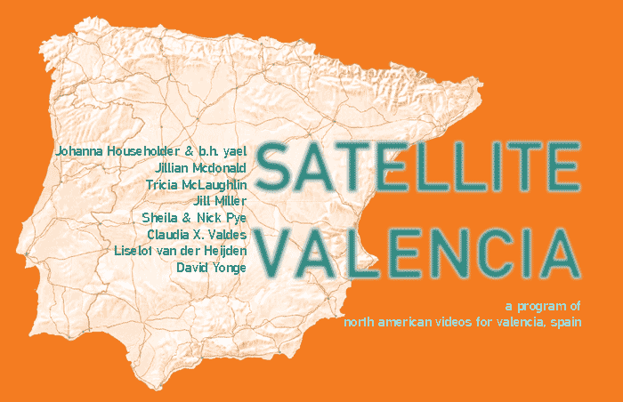
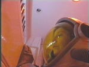
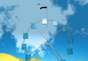
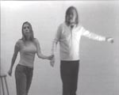
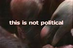
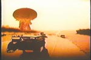
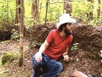

|
| |
| 
|
|
| :::::::::October
2 to 27: exhibition, New York ::::::::::: other
engagements: |
|
| SATELLITE
VALENCIA ::::::::::::::::::::::::::: |
|
|
 |
Johanna
Householder and b.h. yael (Toronto) December 31, 2000 "December 31, 2000" is a shot-for-shot recreation of the pivotal scene in Stanley Kubrick's classic "2001: A Space Odyssey". Dave is in the process of dismantling HAL, the renegade and recalcitrant computer. On December 31, 2000, Kubrick's apocalyptic dream has not yet been realized. The domestic scene supplants the space station, and household appliances become the conduit through which Dave (Johanna Householder) emerges and enters the spaceship in order to render HAL powerless. In an ironic reversal, "December 31, 2000" exposes the failure of the future. |
| Jillian
Mcdonald (New York) Screen Kiss "Screen Kiss" is a conceptual sequel to Me and Billy Bob (2003). By inserting herself digitally into kissing scenes with other actors, the artist aims to make Billy Bob, her object of desire, jealous. press (Art Papers) |
|
|  | Tricia
McLaughlin (New York) Precision Diving Wheel "Precision Diving Wheel" is a Ferris wheel of pools of water and a high diving board. In order to survive this ride, one must be a very precise diver. |
|  | Jill
Miller (San Francisco + Los Angeles) I am Making Art Too This video addresses John Baldessari’s 1971 video-performance piece, "I am Making Art", with humor and scrutiny. The younger artist, Miller, brings Baldessari’s tai chi-esque movements into contemporary times by transforming his original meditative gestures into breakdancing moves. Miller then inserts herself into the new video footage and dances around Baldessari. Missy Elliott’s Work It backs up the new Baldessari-Miller collaborative dance. The three artists (Baldessari, Elliott, and Miller) form a new collaboration. press (New Zealand Herald) |

|
Nick
and Sheila Pye (Toronto) The Paper Wall Boxed into twin rooms separated by a thin wall, a brother and sister communicate their desires. Stunning, provocative, and perplexing, the pair is irresistible to watch as they become increasingly physically and emotionally dependent on one another. press (Flavorpill) |
|  |
Liselot
van der Heijden (New York) Feast. Hommage à Marcel Broodthaers "Feast. Hommage à Marcel Broodthaers" is a satire. Exploiting false metaphors and Nature as a cultural/political idea and anthropomorphic projection, the eagle (heroic symbol on the presidential seal) is mirrored with the vulture, symbol of death and rapacity. The work juxtaposes a series of statements -- "this has nothing to do with oil," "a vulture is not an eagle" and "this is not political" -- with a continuous video loop showing a close up of a group of vultures ferociously fighting to seize a bite. America "America" is a parody of the 2004 State of the Union Address, in which George W. Bush mentions the word "America" exactly 61 times. In this video everything in the speech is removed except the word "America" and the pauses or applause that follow or precede it. press (The Thing) |
|  | Claudia
X. Valdes (Albuquerque) In the Dream of the Planet "In the Dream of the Planet" is a result of looking at how the media has presented information to the public about nuclear arms and nuclear war since the cold war period. In this work, Valdes appropriates the made for TV movie "The Day After" (1983) in its entirety, and condenses the film down to 56 seconds. She repeats these 56 seconds 6 times, and in each repetition edit into the movie to convey themes that mirror research done on the history of nuclear arms. These themes include a focus on human relationships, the media, the military, and science. |
|
 |
David
Yonge (Vancouver) Redneck / Redneck Everyone in the world has an identical twin. This myth claims if the two ever meet, only one will survive. |